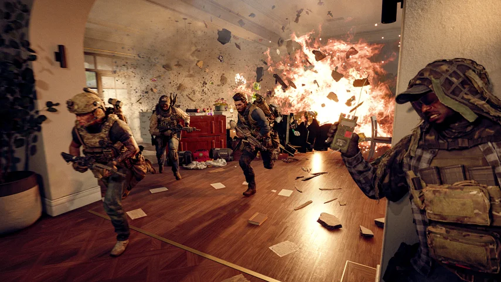

La industria del videojuego vuelve a dar un titular que duele. Electronic Arts ha confirmado despidos en varios de los estudios que desarrollaron Battlefield 6, el juego que batió todos los récords históricos de la saga y fue el tÃtulo más vendido en Estados Unidos durante 2025. Los afectados incluyen a trabajadores de Criterion Games, DICE, Ripple Effect y Motive Studios. El número exacto de empleados despedidos no ha sido revelado.
EA justifica la medida con la palabra que más se repite en las notas de prensa del sector: "realineamiento". La compañÃa ha declarado que estos cambios buscan adaptar los equipos al nuevo enfoque del juego, que pasa de un desarrollo activo a convertirse en un servicio live-service de largo recorrido. "Battlefield sigue siendo una de nuestras mayores prioridades, y continuamos invirtiendo en la franquicia", aseguró un portavoz de EA. Mientras tanto, los afectados actualizan sus perfiles de LinkedIn.
El caso resulta especialmente llamativo porque la justificación habitual para este tipo de recortes — pobres resultados comerciales — no aplica aquÃ. Battlefield 6 fue un éxito masivo. La transición de equipos de desarrollo al modo "soporte y actualizaciones" es una dinámica que se repite con preocupante frecuencia en los grandes estudios: los mismos desarrolladores que construyeron el éxito son los primeros en salir una vez que el juego está estabilizado.
La noticia llega en la misma semana en que el GDC Festival of Gaming publica su informe State of the Game Industry 2026, que dedica un apartado importante a los despidos masivos que han sacudido el sector durante los últimos tres años. Según ese informe, la IA generativa y la presión de los grandes publishers sobre sus estudios internos siguen siendo los principales factores de inestabilidad laboral en la industria. Para muchos desarrolladores independientes, estas noticias son el recordatorio más claro de por qué tiene sentido apostar por el camino del desarrollo indie.